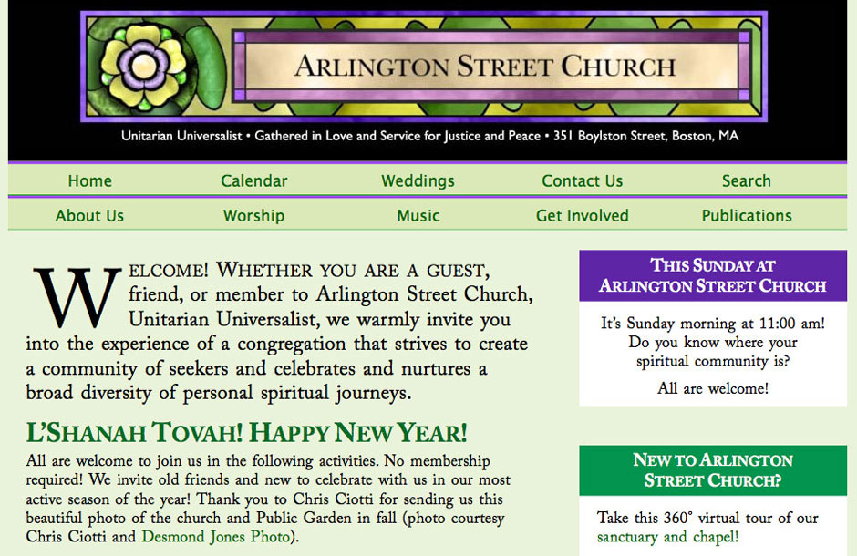
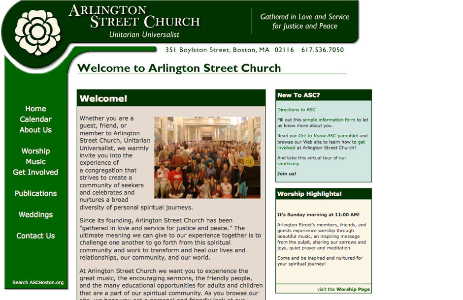
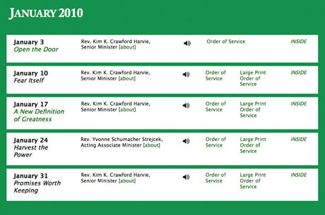
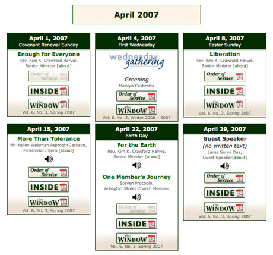

Information About —
Arlington Street Church
   
Arlington Street Church is a prominent non-profit organization in downtown Boston. I re-designed the entire website, including the branding banner on top of all of the pages and the Music@ASC banner. Coded back end with Eric Meyer reset and the 960 grid system. Changed the image-based JavaScript navigation to all CSS list navigation. Introduced colored background and web fonts version of traditional book typography. Made site verify by W3C XHTML1.0 strict standards and 508 governement Wireless Access Initiative standards for access by the handicapped, tested in Firefox free screenreader, FANGS.I made the site readable on the iPhone. Repeat visitors went up 25%, according to our web host statistics, after the re-design.
TOP TWO IMAGES
My new design for the home page is on top of the old design for the home page.
MIDDLE TWO IMAGES
My new calendar design, for the archive of worship materials, with flexible widgets that automatically adjust for each new week’s event and for special events, is on top. The old design is on the bottom.
BOTTOM TWO IMAGES
The new Music@ASC banner is on the top, the old one is on the bottom.